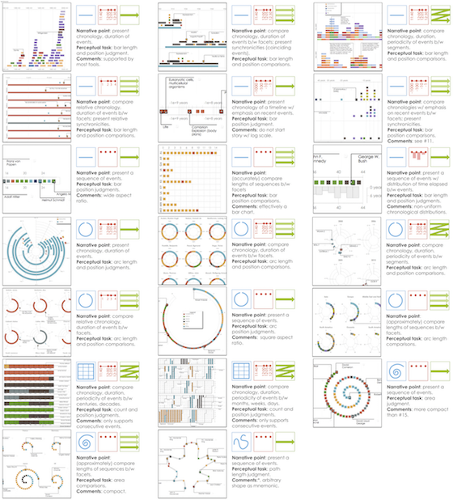

Click on regions of this image to jump to a particular timeline.
Each example timeline shown below is described by a tuple from our timeline design space, described using the following format:
[Representation] | [Scale] | [Layout]
Click on an image to view in full resolution in a new tab.